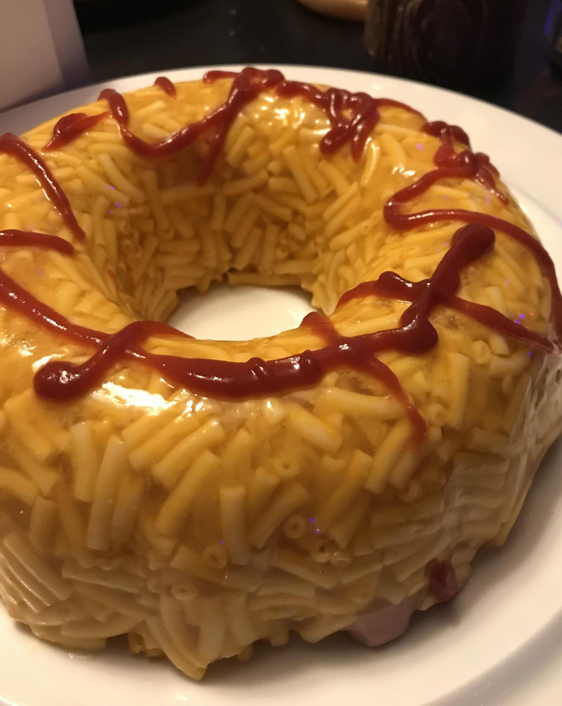

Jellypasta

Description
Think out of the box and impress your friends with this original meal.
Ingredients
- 1 (8 ounce) box elbow macaroni
- Jello gelatin mix – Whatever flavor you want.
- ½ teaspoon salt.
- Tomato sauce.
Steps
-
Bring a large pot of lightly salted water to a boil. Cook elbow macaroni
in the boiling water, stirring occasionally until cooked through but
firm to the bite, 8 minutes. Drain.
-
Pour the powdered gelatin into a medium-sized mixing bowl. Add boiling
water to the gelatin mix, and stir for 2 minutes until it's completely
dissolved.
-
Fold macaroni into the gelatin mix while it's hot, add cold water and
refrigerate for at least 4 hours, or until the gelatin is firm and
doesn't stick to your fingers when touched.
-
Add tomato sauce when you take it out of the refrigerator and it's done.
Return to menu